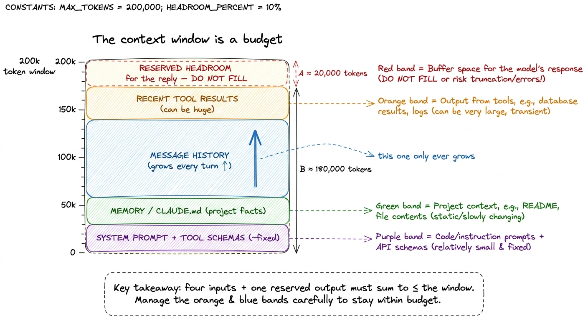
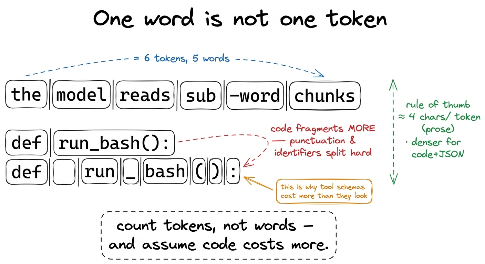
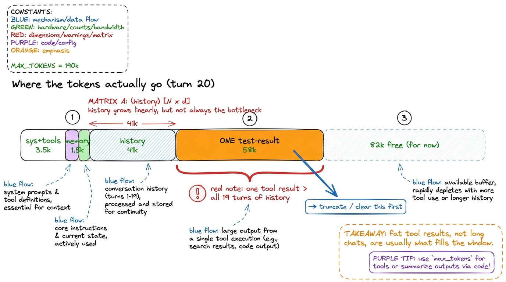
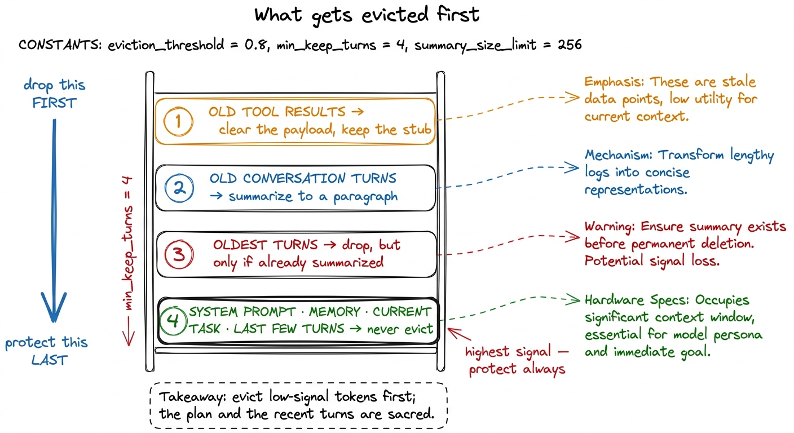

Context budgets: what goes in, what gets evicted
The context window is the most expensive real estate in your whole agent, and unlike memory or disk you cannot buy more of it at runtime. Every turn, the harness has to fit the system prompt, the project memory, the whole conversation so far, and a pile of tool output into one fixed-size box — and still leave room for the model to reply. When it doesn't fit, something has to go. This chapter is about deciding, on purpose, what goes in and what gets evicted, before the model does it for you by simply forgetting.
Anthropic's own framing is worth borrowing: the context window is "a critical but finite resource," and the job is to "find the smallest set of high-signal tokens that maximize the likelihood of your desired outcome."1 From Anthropic's Effective context engineering for AI agents. The same piece introduces "context rot" — as the token count climbs, the model's ability to recall any single fact in the window degrades. So a full window isn't just an out-of-memory risk; it's a quality risk. Less is often literally more accurate. In messages, turns and roles we saw what the message array holds. Here we treat that array as a budget and learn to balance the books.
The window is a fixed box, and it fills from four sources
Say your model has a 200k-token context window. That number is a hard ceiling on prompt-plus-reply for a single call — not a suggestion, not something that grows. Everything the harness wants the model to know this turn, plus everything you want it to say, has to live inside that one box.
Four line items compete for the space, and it helps to picture them stacked:

figure rendering · The window is a fixed beaker. Four inputs compete for the space, and tLine item one is the system prompt and tool schemas — your instructions plus the JSON contracts for every tool the model may call. This is roughly fixed per session, but "roughly fixed" is not "free": ten verbose tool schemas can quietly eat several thousand tokens on every single turn.2 This is why tool schemas as contracts preaches minimal, non-overlapping tools. Every schema you add is a tax paid on all future turns, not just the ones where the tool is used. Line item two is memory — the CLAUDE.md and project facts the agent loads at startup so it isn't a stranger to your codebase. Line item three is the message history: every user turn, every assistant turn, every tool call, accumulated since the session began. This is the one that only ever grows. Line item four is tool results — and this is the wild card, because a single cat of a big file or an npm test dump can drop 20k tokens into the window in one shot.
Add those four and you get the used budget. Subtract it from the window and what's left is your headroom for the reply. Get the subtraction wrong and the model has no room to answer.
Reserve the reply first, everything else second
Here is the counterintuitive move that beginners skip: budget the output before you budget the input. The model needs somewhere to write its answer, and that answer lives in the same window as the prompt. If you cram the prompt to 199k of a 200k window, the model has 1k tokens to respond — enough to say "I'll fix that" and nothing more.
So the harness picks a reply reserve — call it max_tokens, the ceiling on the completion — and treats it as untouchable. The real budget for inputs is:
WINDOW = 200_000
REPLY_RESERVE = 8_000 # room for the model's answer
SAFETY = 2_000 # counting is approximate; leave slack
INPUT_BUDGET = WINDOW - REPLY_RESERVE - SAFETY # = 190_000That INPUT_BUDGET is the number every packing decision is measured against. The reply reserve comes off the top and never gets loaned out, no matter how badly the history wants the space. This one discipline — carve out the output first — prevents the most common and most baffling failure mode, where a long session suddenly starts truncating the model's answers mid-sentence.
Counting tokens (approximately, and that's fine)
To spend a budget you have to measure what things cost, and the unit is the token, not the character or the word. A token is a sub-word chunk; for English prose a decent rule of thumb is about 4 characters per token, or ~0.75 tokens per word. Code and JSON run denser — punctuation and identifiers fragment into more tokens — so tool schemas and file dumps cost more than their character count suggests.
You have two ways to count. The exact way is the provider's tokenizer or a token-counting endpoint; the fast way is a cheap estimate you can run on every message without a network call.

figure rendering · Tokens are sub-word chunks, and code fragments far denser than prose —def estimate_tokens(text: str) -> int:
# cheap, good-enough: ~4 chars per token for mixed code+prose
return len(text) // 4 + 1
def budget_used(messages, system_prompt, tools):
total = estimate_tokens(system_prompt)
total += sum(estimate_tokens(str(t)) for t in tools)
for m in messages:
total += estimate_tokens(str(m["content"])) + 4 # per-message overhead
return totalNotice the + 4 per message: every message carries a little structural overhead (role markers, delimiters) beyond its raw content, and it adds up over a few hundred turns. The estimate will be off by a few percent — that is exactly what the SAFETY margin above is for.3 Use the estimator for the hot path (deciding every turn what to include) and the exact tokenizer only when you're near the edge and need to be sure. Real harnesses cache these counts per message so they don't re-tokenize the entire history on every lap of the loop. You do not need perfect accounting; you need accounting that is never optimistically wrong, and a safety margin makes it pessimistic instead.
A concrete budget, worked out
Let me make it real. Suppose we're twenty turns into a debugging session on a 200k model, and before this turn the harness tallies:
- System prompt + tool schemas: 3,500 tokens
- Memory (
CLAUDE.md): 1,500 tokens - Message history (19 prior turns): 41,000 tokens
- The tool result that just came back — a full
pytest -vrun that failed loudly: 58,000 tokens
Sum: 104,000 tokens of input. Against our INPUT_BUDGET of 190,000 we're fine — this turn fits with room to spare. But look at where the mass is: that one test dump is 58k tokens, bigger than the entire nineteen-turn history combined. Left unchecked, three more test runs like it and we blow the window not because the conversation was long, but because a handful of tool results were fat. This is the single most common way agents run out of room, and it points straight at the first fix.

figure rendering · A worked budget at turn 20: a single failed-test dump outweighs the enTruncate tool results at the source
The cheapest win in the whole chapter: never let a tool return unbounded text into the window. Cap it at the boundary, before it ever becomes a message. A failed test run might be 58k tokens, but the model rarely needs all of it — it needs the shape of the output and the failing part.
def clip_tool_result(text: str, max_tokens: int = 4_000) -> str:
budget_chars = max_tokens * 4
if len(text) <= budget_chars:
return text
head = text[: budget_chars // 2]
tail = text[-budget_chars // 2 :]
dropped = estimate_tokens(text) - max_tokens
return f"{head}\n\n… [{dropped} tokens truncated] …\n\n{tail}"Keeping the head and the tail and dropping the middle is deliberate: for command output the useful signal usually lives at the top (what ran, the summary) and the bottom (the error, the final tally), while the middle is repetitive noise. We also leave a visible [N tokens truncated] marker so the model knows it's seeing a clipped view and can ask to see more of a specific file if it genuinely needs it.4 This is a policy decision, not a law. For a grep, head-and-tail is wrong — you want all the matches. Good harnesses truncate per-tool: line-limits for search, head+tail for logs, and a "read this range" follow-up tool so the model can page into anything it truncated. Truncation should never be a dead end. That single 4k cap would have turned our 58k monster into 4k, and the budget crisis simply never happens.
When it still doesn't fit: the eviction order
Truncation caps each new result, but the history still grows turn after turn, and eventually even a well-behaved session crosses INPUT_BUDGET. Now the harness must evict — remove or compress something already in the window. The question is what to drop first, and the answer follows one principle: shed the lowest-signal tokens before the highest-signal ones. You throw away the stale receipts long before you throw away the plan.
A sane eviction order, cheapest and safest first:
- Clear old tool results. Anthropic calls this one of the "lightest touch" forms of compaction — the raw output of a
read_filefrom fifteen turns ago has already done its job; the model acted on it and moved on. Replace the body with a stub like[file contents cleared]and reclaim the tokens. The fact that the tool ran stays in history; only the bulky payload leaves. - Summarize old conversation turns. Collapse a run of early back-and-forth into a short synopsis that preserves, in Anthropic's words, "architectural decisions, unresolved bugs, and implementation details while discarding redundant tool outputs." Ten exploratory turns become one paragraph of what was learned.
- Drop the oldest turns entirely. Only as a last resort, and only turns already captured by a summary — a naked sliding window that forgets the start of the task is how an agent loses the thread.
What you protect at all costs: the system prompt, the memory block, the current task and the most recent few turns. Those are the highest-signal tokens in the window; they're the last thing to go, never the first.

figure rendering · The eviction ladder: clear stale tool payloads first, summarize old tuCompaction as the recurring rhythm
Put these pieces on a schedule and you have a compaction step: a check the harness runs at the top of each lap. Measure the input budget; if it's under a threshold, pack and call the model as usual; if it's over, evict down the ladder until it fits, then call.
def prepare_context(messages, system_prompt, tools):
used = budget_used(messages, system_prompt, tools)
if used <= INPUT_BUDGET:
return messages # plenty of room, do nothing
messages = clear_old_tool_results(messages) # rung 1
if budget_used(messages, system_prompt, tools) > INPUT_BUDGET:
messages = summarize_old_turns(messages) # rung 2
return messagesThe trigger is usually a watermark — say 80% of INPUT_BUDGET — so compaction fires before you're against the wall, with room to summarize comfortably rather than in a panic. And crucially, you only pay the cost of eviction when you're actually near the limit; a short session never triggers it and runs at full fidelity. We give this its own full treatment in compaction and summarization; here the point is just that budgeting and eviction aren't a one-time setup — they're a loop that runs forever, quietly keeping the agent inside its box.
What you've built, and what it still misses
You now have the accountant of the harness: a component that knows the window is finite, counts what each input costs, reserves the reply before spending on the prompt, truncates fat tool results at the source, and evicts low-signal tokens in a sane order when the budget tightens. That is context engineering's arithmetic core — the part that keeps a two-hundred-turn session from simply falling off the end of the window.
What it still misses is memory that outlives the window entirely. Compaction summarizes to survive the current session, but the moment you truncate or clear something, that information is gone unless it was written down somewhere durable. The next move is to give the agent a place to keep notes and project knowledge that never has to compete for token budget at all — a persistent memory layer and CLAUDE.md, so the most important facts live outside the beaker and get loaded back in only when needed.